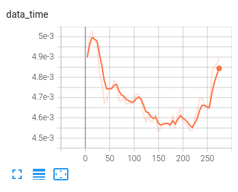
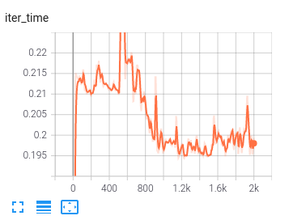
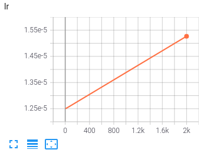
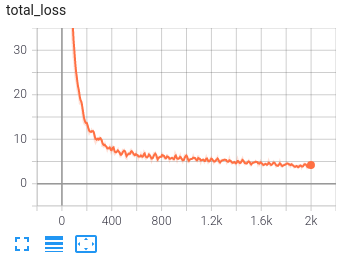
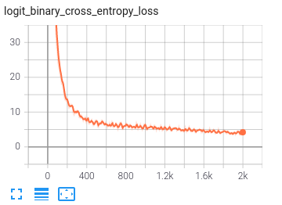

Log Visualization
The utility let you log PyTorch models and metrics into a directory for visualization with the TensorBoard. Such as, visualizing the fluctuate trend of the load data time, the iter time, the model loss, the total loss, the learning rate and etc.
There are two steps to visualize your data:
use log_buffer to generate
mixk/tools/work_dirs/runsof your data;use TensorBoard to generate scalar/image/histogram of your data.
Output Runs
First you should make sure which directory your data is in:
if your data is in
mixk/engine/hooks, like thelrof in themixk/engine/hooks/lr_scheduler.py, you can add the following line below thelr.@HOOKS.register_module() class LRSchedulerHook(HookBase): ... def _record_lr_log(self): lr = self._optimizer.param_groups[self._best_param_group_idx]['lr'] self.trainer.log_buffer.put_scalar('lr', lr, smoothing_hint=False)
if your data is in other place of
mixk/engine, like thelossof theoutputin themixk/engine/mixk_engine.py, you can add the following line below theoutput.class CommonEngine(EngineBase): ... def run_train_iter(self): ... self.output = self.loss_fn(self.model_output) # add the following line to visualize the logits self.log_buffer.put_scalar('loss', self.output['loss'].item(), smoothing_hint=False)
if your data is in other directory under
mixk, like thelogitsin themixk/models/encoder/lxmert.py, you can add the following line below thelogits.@ENCODER.register_module() class LXMERTForClassification(nn.Module): def forward( ... logits = self.classifier(pooled_output) # add the following line to visualize the logits from .log_buffer_mixk import get_log_buffer logger_buffer = get_log_buffer() logger_buffer.put_scalar('logits', logits, smoothing_hint=False)
Visualize Runs
After the steps above, the data can then be visualized with TensorBoard, the commands are as below:
pip install tensorboard
cd MIX-Kalman/tools/work_dirs
tensorboard --logdir=runs
Example result:




